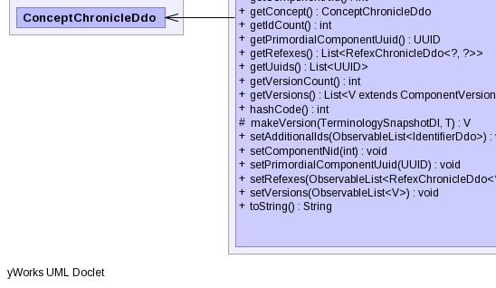

- java.lang.Object
-
- org.ihtsdo.otf.tcc.ddo.concept.component.ComponentChronicleDdo<V,T>
-
- All Implemented Interfaces:
- Serializable
- Direct Known Subclasses:
- ConceptAttributesChronicleDdo, DescriptionChronicleDdo, MediaChronicleDdo, RefexChronicleDdo, RelationshipChronicleDdo
public abstract class ComponentChronicleDdo<V extends ComponentVersionDdo,T extends ComponentVersionBI> extends Object implements Serializable
- See Also:
- Serialized Form
-
 
-
-
Field Summary
Fields Modifier and Type Field and Description javafx.collections.ObservableList<IdentifierDdo>additionalIdsprotected ConceptChronicleDdoconceptjavafx.collections.ObservableList<RefexChronicleDdo<?,?>>refexes
-
Constructor Summary
Constructors Constructor and Description ComponentChronicleDdo()ComponentChronicleDdo(TerminologySnapshotDI ss, ConceptChronicleDdo concept, ComponentChronicleBI<T> another)
-
Method Summary
Methods Modifier and Type Method and Description voidbeforeUnmarshal(Unmarshaller u, Object parent)booleanequals(Object obj)Compares this object to the specified object.List<IdentifierDdo>getAdditionalIds()intgetComponentNid()ConceptChronicleDdogetConcept()intgetIdCount()UUIDgetPrimordialComponentUuid()List<RefexChronicleDdo<?,?>>getRefexes()List<UUID>getUuids()intgetVersionCount()List<V>getVersions()inthashCode()Returns a hash code for thisEComponent.protected abstract VmakeVersion(TerminologySnapshotDI ss, T version)voidsetAdditionalIds(javafx.collections.ObservableList<IdentifierDdo> additionalIds)voidsetComponentNid(int componentNid)voidsetPrimordialComponentUuid(UUID primordialComponentUuid)voidsetRefexes(javafx.collections.ObservableList<RefexChronicleDdo<?,?>> annotations)voidsetVersions(javafx.collections.ObservableList<V> versions)StringtoString()Returns a string representation of the object.
-
-
-
Field Detail
-
additionalIds
public javafx.collections.ObservableList<IdentifierDdo> additionalIds
-
refexes
public javafx.collections.ObservableList<RefexChronicleDdo<?,?>> refexes
-
concept
protected ConceptChronicleDdo concept
-
-
Constructor Detail
-
ComponentChronicleDdo
public ComponentChronicleDdo()
-
ComponentChronicleDdo
public ComponentChronicleDdo(TerminologySnapshotDI ss, ConceptChronicleDdo concept, ComponentChronicleBI<T> another) throws IOException, ContradictionException
- Throws:
IOExceptionContradictionException
-
-
Method Detail
-
beforeUnmarshal
public void beforeUnmarshal(Unmarshaller u, Object parent)
-
equals
public final boolean equals(Object obj)
Compares this object to the specified object. The result is true if and only if the argument is not null, is a EComponent object, and contains the same values, field by field, as this EComponent.
-
hashCode
public final int hashCode()
Returns a hash code for thisEComponent.
-
makeVersion
protected abstract V makeVersion(TerminologySnapshotDI ss, T version) throws IOException, ContradictionException
- Throws:
IOExceptionContradictionException
-
toString
public final String toString()
Returns a string representation of the object.
-
getAdditionalIds
public List<IdentifierDdo> getAdditionalIds()
-
getComponentNid
public int getComponentNid()
-
getConcept
public ConceptChronicleDdo getConcept()
-
getIdCount
public int getIdCount()
-
getPrimordialComponentUuid
public UUID getPrimordialComponentUuid()
-
getRefexes
public List<RefexChronicleDdo<?,?>> getRefexes()
-
getVersionCount
public int getVersionCount()
-
setAdditionalIds
public void setAdditionalIds(javafx.collections.ObservableList<IdentifierDdo> additionalIds)
-
setComponentNid
public void setComponentNid(int componentNid)
-
setPrimordialComponentUuid
public void setPrimordialComponentUuid(UUID primordialComponentUuid)
-
setRefexes
public void setRefexes(javafx.collections.ObservableList<RefexChronicleDdo<?,?>> annotations)
-
setVersions
public void setVersions(javafx.collections.ObservableList<V> versions)
-
-